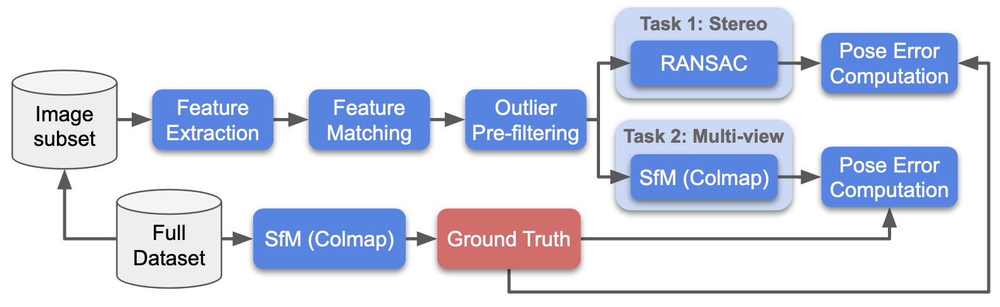

I would like to share my thoughts on ICCV 2021 paper “On the Limits of Pseudo Ground Truth in Visual Camera Re-localisation” by Brachmann et.al. But first let’s recap, what is Visual relocalization and how it is usually evaluated.
Visual (re-) localization: short recap
We have a robot with RGB or RGB-D camera. Our robot have been in some place once and have been explored it, taking the pictures. After some time, we bring it there again and turned on. Our robot (or, to be precise, the localization algorithm, which robot uses) task is to estimate its position and orientation from a single photo. How do we measure if it does it correctly?
We obtain two sequences of the images by going around our place. One is “training” or “database” sequence. The second is “test” sequence, which is emulates robot going there, wanting to know where it is.
We run some known-to-be-reliable algorithm such as SfM or SLAM on those image sequences to jointly obtain the camera poses for all the images. Sometimes we can use additional sensors to get the pose directly and avoid such estimation completely. However, that is not the case we are discussing now.
We provide the database images together with their poses to the algorithm we want to evaluate. It can do whatever it wants with them.
Finally, we give the algorithm an image from the test sequence without a pose and algorithm estimate its camera pose. Then we compare this pose to the pose, which we receive with the pose we have and rank algorithms by the errors in the pose.
There are different kinds of algorithms for visual localization. One possible way to first find the most similar iamges from our dataset to the query image, then match query to them and finally calculate the pose, given the poses of databased images. Another way is to train a model on a database images, such that for each pixel or region it tried to directly estimate its 3D location. Then based on the image content location, we deduce the camera pose.
What is the paper about?
The idea of the paper is very simple and yet nobody asked its main question before. When we benchmark our image matching or camera relocalization algorithms, we do not really have ground truth data for the camera pose, as we just recaped. Instead we rely on some sort of known-to-be-reliable algorithm to infer this information from (many) images. This process is called “pseudo Ground Truth (pGT)” in the paper.
Does it affect results to be in favor of the (family of) methods, which were used to generate the pseugo GT?
Case-study: Image Matching Challenge
Let me give you an example.
Our Image Matching Challenge 2019, 2020 2021 does exactly this: the camera pose are reconstructed with COLMAP 3d reconstruction software given thousands of images. COLMAP is based on SIFT local features and LO-RANSAC for the pose stimation. 
Can we use it to benchmark other local features and RANSACs in a fair way? That is the question, reviewers of our paper asked us. We answered this question by running the 3d reconstruction with very different local features: R2D2, SIFT, DoG-HardNet, SuperPoint. Then we compared the difference in the poses produced by the different methods is very small and much smaller than the accuracy threshold we used for evaluation.
So we can safely use our benchmark to evaluate two view matching methods. Can we really?
SfM versus Dense SLAM
The “On the Limits…” asks the different question, than the one we have answered in IMC paper. While, the GT might be not biased towards specific local feature, it can be biased towards the higher-level algorithm – Structure-from-Motion (SfM). But the (sparse) SfM is not the only way how we can obtain camera poses from the collection of images – one could use (dense) Depth-based SLAM. Are the poses we got from them the same?
The answer is: no, they are not the same!
The paper, however, does not stop here, it studies the following question: if the camera poses (think of them as “labels”) of the training set were obtained with a different family of algorithms, does it influence their performance?
The answer is yes. Look at the image below, which shows the trajectories, estimated by the relocalization methods, depending on the (pseudo) ground truth source.
My take on the paper.
The paper asks a great question and provides good answers. It is also well-written and the experiments done with rigor. OK, time to stop “CVPR-review” mode and provide my thoughts.
I love the paper. However, (post-hoc) I believe that paper should stop earlier or go deeper.
First and main message of the paper (which paper does NOT formulate in that way):
The combination of the current methods (SfM or SLAM) with a current way of generating training sequence (single camera going around the place once) does not lead to the robust and precise enough camera poses.
I don’t buy the paper’s argument that “depending on the metric you use, one or another is better”. No. There are only 3 possible explanations:
SfM estimates wrong poses from the sequence
RGBD-SLAM estimates wrong poses from the sequence
both SfM and RGBD-SLAM estimate wrong poses. The variant: noone cannot estimate precise poses from the given images.
We are not in the quantum mechanics world, there is a single, well-defined (possibly unknown) correct camera pose. The correct pose exists and the question is whether SfM or SLAM (or neither) is closer to it. Yes, it would require some additional sensors, or running in simulated world, but anyway - the message should not be “just provide 2 versions of pGT”. The message is: if your 2 versions of pGT does not agree, GET MORE/BETTER DATA.
In addition to that I would like to see a paper, which answers the following question: given tha data we have (i.e. bad data) but with also available real GT camera poses, under which conditions, which algorithm (SfM or Depth SLAM) provides better results?
Which algorithm can adapt to (wrong) training data and be consistent with it?
One thing, which paper focuses on is how the “test” pGT is generated. However, even the bigger impact can be from the fact that training data may conflict with the poses, that algorithm estimates.
Imagine the augmented reality scenario, where one needs to draw the (virtual) teddy bear on the coach. In that case we actually don’t care if the camera pose estimate is correct, or if our model of the room is correct. What we care about, is how naturally looking will be position of the Teddy bear (or Pikachu). It also important that bear not jumps around when we move our camera slightly.
Given the images and results in the paper, it seems that (learning-based) DSAC can suits this much better than (non-learning) AS. That is also stated in the paper conclusions. In the same time, it seems that the variance of the pose estimates is smaller for the SfM pGT than for the SLAM even for DSAC.
However, I would also like to see a paper, which studies how the error/bias/variance in the training data affects the different algorithms, so they could adapt to use bad data better, in more detail.
Conclusion
The paper is thought-provoking and I hope our community will read it and think about it. We also need to pay a way more attention to our data-gathering practice, because it really makes a difference.
P.S. Thanks to Eric for sending me additional visualizations, which were not in the arXiv paper.
Everything you (didn’t) want to know about image matching